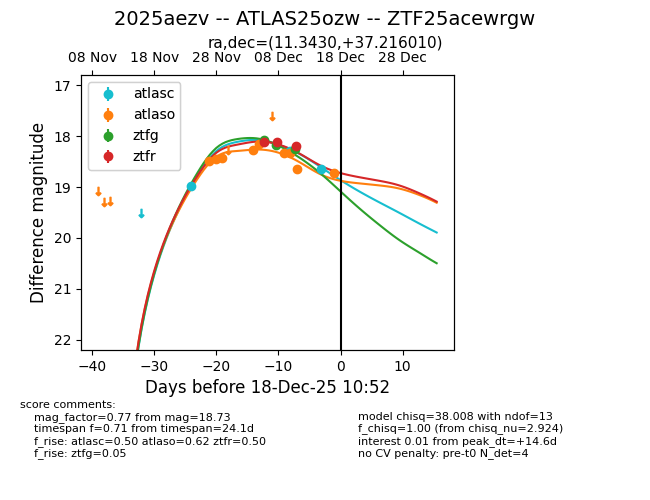
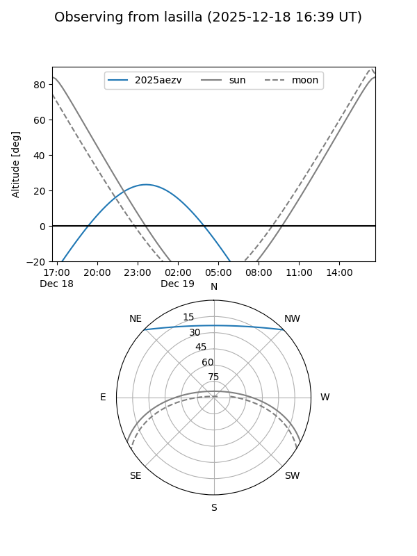
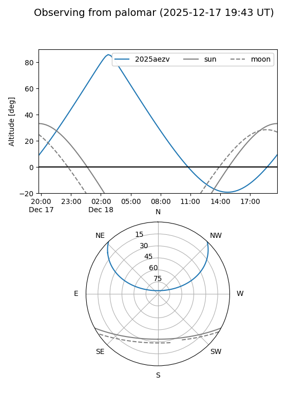
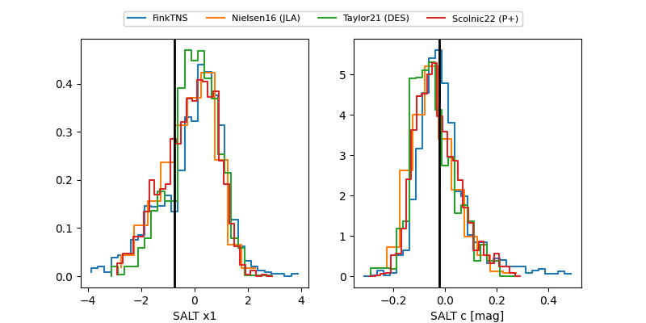

2025aezv
Target 2025aezv at 2025-12-18 10:53
Aliases and brokers:
FINK: fink-portal.org/ZTF25acewrgw
Lasair: lasair-ztf.lsst.ac.uk/objects/ZTF25acewrgw
ALeRCE: alerce.online/object/ZTF25acewrgw
TNS: wis-tns.org/object/2025aezv
YSE: ziggy.ucolick.org/yse/transient_detail/2025aezv
alt names
ZTF25acewrgw (ztf,fink_ztf)
2025aezv (tns,yse)
ATLAS25ozw (atlas)
Coordinates:
equatorial (ra, dec) = 11.3430,+37.21601
equatorial (HMS+DMS) = 00:45:22.32,+37:12:57.64
galactic (l, b) = (121.5924,-25.63996)
Photometry
last atlasc=18.64, atlaso=18.73, ztfg=18.25, ztfr=18.20
3 atlasc, 9 atlaso, 3 ztfg, 3 ztfr detections
Lightcurve

Visibility


Additional plots
